MWEMU Documentation.
Intro
Welcome to official MWEMU documentation, you can do scrolling down or using the direct links that are on the left.
Github repo: https://github.com/sha0coder/mwemu
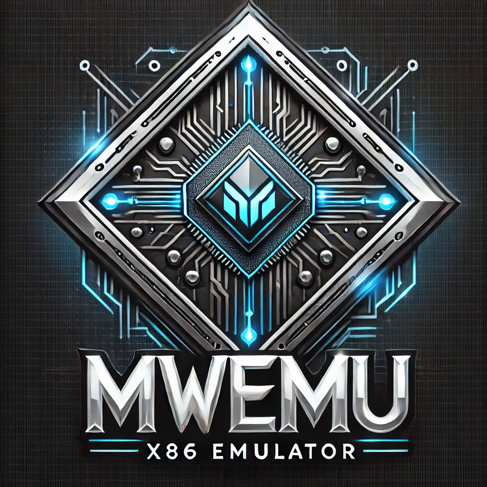
What is MWEMU?
MWEMU is a hardware emulator and Windows process simulator written in pure Rust from scratch, It was created by @sha0coder and It's open source. The contributors of this software have improved the quality of the project a lot, check to know them.
The implemented hardware is x86/x64, unlike other emulators also implemt some parts of the OS (mainly windows) because asm code soon or later is going to do system calls (WinAPI, linux syscalls, etc).
It resulted extremely useful for malware deobfuscation, but this don't replace reversing, I't needed a previous reversing to prepare well the emulation initial state, and emulate only small group of functions, like decryption, keygen etc. In some specific cases mwemu can do full-emulation, wihth simple packers, encoded shellcodes, etc.
The emulation and simulation is implemented from scratch, but the awesome Rust library iced-x86 is used to the translation from a bunch of bytes to instruction objects. I implemented more than 300 x86 instructions, flags, exceptions, some loaders PE32/PE64/ELF64/shellcode32/shellcode64 and many other stuff.
MWEMU is blazing fast and also is memory-safe thanks to the Rust magic compiler.
The 3 ways of using MWEMU
1. The first way is commandline, see commandline for more details, this is for trying full-emulation.
2. Second way is creating python scripts with pymwemu module, can be installed with pip or git.
pypi: https://pypi.org/project/pymwemu/
If you need features or bug-fixes implemented recently use the git, will need to compile the full project and then the python bindings with maturin, more details in this section pymwemu instalation
3. Third way is using the rust crate published in crates.io https://crates.io/crates/libmwemu from a rust application.
Architectures
You can run MWEMU from Windows, Linux and Mac (x86 and also m1)
But only can be emulated x86 code (32bits and 64bits) mainly for Windows, there is linux shellcode support even syscalls are implemented but regarding ELF only 64bits, only static compiled and quite basic support for now, but no problem with shellcodes.
libc can be emulated well despite it is plenty of ymm instructions, but the linker cannot be emulated totally so far, my plan is fully emulating the linker, in this case I don't need to implement the hole linking process (.got and .plt creation etc)
A bit of internals
For now, just a basic overview of the internals.
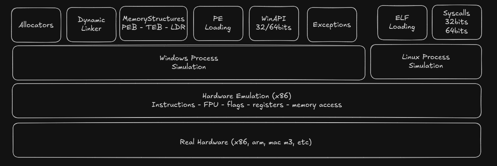
In the past I named the project SCEMU, and was stored in 3 separated repos for mwemu (the commandline) pymwemu (pyhon module) and (libmwemu) the engine where all is implemented and also it's the Rust Crate module on crates.io.
Then it was renamed to MWEMU, because SCEMU is more specific to shellcode and because it's an italian bad word.
So, now it's one repo with a crates/ folder with the 3 crates.
The tests are implemented on crates/libmwemu/src/tests/ and are described lately.
Most of files were splitted in small files.
~/s/mwemu ❯❯❯ ls crates/libmwemu/src/ main ⬆ ✱
banzai.rs emu/ kuser_shared.rs syscall/
breakpoint.rs emu_context.rs lib.rs tests/
colors.rs engine/ macros.rs thread_context.rs
config.rs err.rs maps/ threading.rs
console.rs exception.rs ntapi/ tools/
constants.rs exception_type.rs pe/ tracing.rs
context/ flags.rs peb/ utils.rs
crit_state.rs fpu/ regs64.rs winapi/
definitions.rs fpu.rs script.rs
eflags.rs global_locks.rs serialization/
elf/ hooks.rs structures/
emu/ contains emu methods and sub-bojects that are involved in the emulation itself.
In engine/ there are the implementation of all the instructions.
winapi/ contains the WinAPI implemntations divided in winapi32/ and winapi64/
there are other thigngs like contants.rs structures/ etc.
Test System
For triggering locally use make tests this downloads some binaries and launch the test system cargo test
Don't use --release, always is more convinient do the tests without aplying the optimizations, that could ignore some type of errors. Actually the github CI is configured to do cargo test and also cargo test --release to check both modes.
Every git push or pull-request will trigger the CI in gibhut to perform all the tests in Linux, Windows and Mac. In in the case of PR is mandatory, in the case of a git push is only informative.
PR also triggers a coverage analysis of the tests, which is currently only 32%
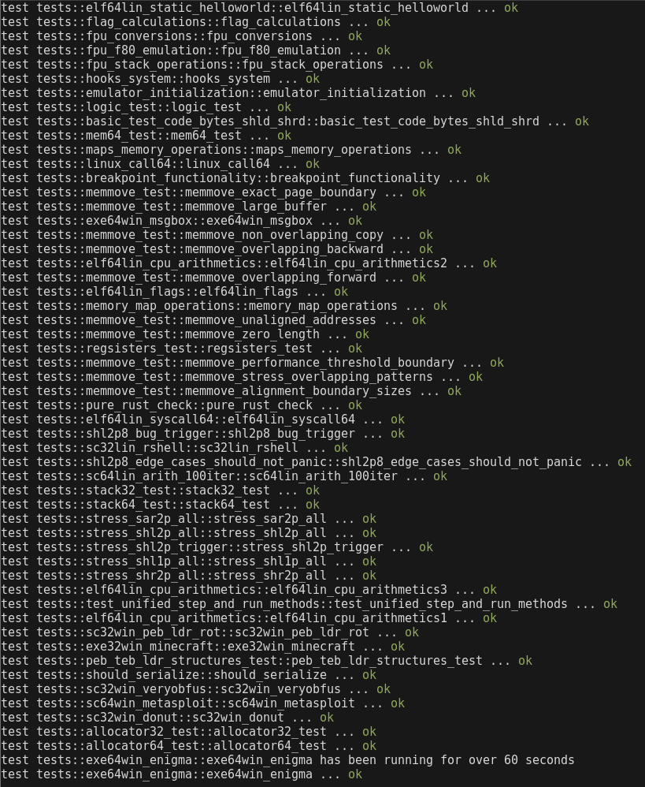
Project Contributtors
There are also other people that suggested intereting ideas and optimizations.
Regarding wit00 it's a github glitch for git pushing having a bad configuration in git config. (the bug was reported to github)
I'm @sha0coder and I created this software to empower my reversing engineering works, and I'm sharing this because I think it's useful for some cases.
Some graphs:https://github.com/sha0coder/mwemu/graphs/contributors
Videos and pics
radare2 integration on mwemu - r2con2025
my youtube channel, there are some demos
License
Actually there are several licenses, the source code is GPLv3, but the crates.io rust module and pypi python module are MIT for having less restrictions in distributing software using libmwemu or pymwemu.
https://github.com/sha0coder/mwemu/blob/main/LICENSE
Don't hesitate in contact me for creating technologies based of this software.
email: sha0 at badchecksum dot net
MWEMU commandline tool
The commandline is a quick way of using mwemu, and there are many features like register/memory/call/string tracing or capturing emulation moments.
If the packer is simple probably can be full-emulated using the commandline tool, but if you need more control use pymwemu and for total control libmwemu.
In rust you can compile and exec together with cargo run, use --release mode for faster execution, example:
❯❯❯ cargo run --release -- -6 -f file -vv -c 100
This is equivalent of doing:
❯❯❯ cargo build --release
❯❯❯ target/release/mwemu -6 -f file -vv -c 100
MWEMU Installation
1. First you need to install Rust and Cargo, and the best way is using rustup.
For instance in linux or mac:
curl --proto '=https' --tlsv1.2 -sSf https://sh.rustup.rs | sh
In the default setup binaries are in ~/.cargo/bin/ but you need to add this to the path, ideally on last section of the path.
export PATH="$PATH:/home/username/.cargo/bin/"
The installer says how to put in the bashrc or other shells rc.
2. Then there are 2 options to install this
-
Install from crates.io (is more convininent second option)
Shell cargo install mwemu -
The recommended way is cloning the github repo and compile from it, with Cargo it's simple.
Shell git clone https://github.com/sha0coder/mwemu.git cargo build --release make tests
--help
Use help option for viewing the commandline options, note that the before the "--" there are cargo flags and after the "--" are the parameters of the program, in this case mwemu commandline.
~/s/mwemu ❯❯❯ cargo run --release -- --help Finished `release` profile [optimized] target(s) in 0.06s
Running `target/release/mwemu --help`
MWEMU emulator for malware 0.7.12
@sha0coder
USAGE:
mwemu [FLAGS] [OPTIONS]
FLAGS:
-6, --64bits enable 64bits architecture emulation
--banzai skip unimplemented instructions, and keep up emulating what can be emulated
--call enable call tracer
--entropy display changes in the entropy
--flags trace the flags hex value in every instruction.
-F, --fpu trace the fpu states.
-h, --handle handle Ctrl+C to spawn console
--help Prints help information
-l, --loops show loop interations, it is slow.
--multithread enable multithread emulation
-n, --nocolors print without colors for redirecting to a file >out
-p, --stack_trace trace stack on push/pop
-t, --test test mode
-m, --trace_memory trace all the memory accesses read and write.
-r, --trace_registers print the register values in every step.
--version Prints version information
-v, --verbose -vv for view the assembly, -v only messages, without verbose only see the api calls and
goes faster
OPTIONS:
-A, --args
Full Emulation
Main options are:
-6 for 64bits mode (otherwise would be 32bits)
-f for selecting file path.
-vv for vieweing the emulated assembler. (emulation is faster with no verbosity, in this case only shows the api calls)
❯❯❯ cargo run --release -- -6 -f test/elf64lin_cpu_arithmetics1.bin -vv
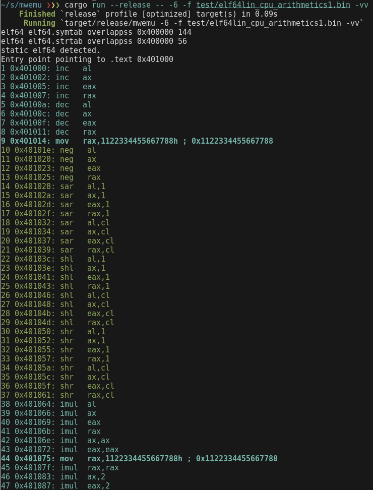
Capturing a moment
MWEMU displays always the number of emulated instructions, and this is a unique identificator of a moment.
The moment 1 is the first assembly instruction, if you add the flag -c 1 the emulator will stop before emulating instruction 1
~/s/mwemu ❯❯❯ cargo run --release -- -6 -f test/elf64lin_cpu_arithmetics1.bin -vv -c 1 main ⬆ ✱
Finished `release` profile [optimized] target(s) in 0.07s
Running `target/release/mwemu -6 -f test/elf64lin_cpu_arithmetics1.bin -vv -c 1`
static elf64 detected.
Entry point pointing to .text 0x401000
-------
1 0x401000: inc al
--- console ---
=>
The instruction 1 will not be colored, this means that that instruction is going to be emulated in next step.
This spawns the console in that emulator state, and you can press enters to emulate steps or "h" command for viewing options.
If verbose mode is not set, only WinAPI, syscalls etc will be displayed, but there will be also a number that represent the emulated instructions until that state.
There is the option of stopping the emulator at specific address with uppercase "-C addr" but note that the address can be triggered multiple times and is not an unique identificator like the -c moment
Verbosity
There are 4 verbosity levels:
0: Don't use any -v for minimum verbosity, only WinAPI calls and syscalls will be printed.
1: Use -v for viewing also some messages like, polymorfic code detected etc.
2: Use -vv for viewing also the assembly code, mwemu will print every assembly instruction, this makes slower the emulation.2: Use -vv for viewing also the assembly code, mwemu will print every assembly instruction, this makes slower the emulation.
3: Use -vvv for also viewing every "rep" interaction, in instruction with rep prefix like "rep movzx" will print one line for every step of the rep loop.
Use -V or --verbose_at for enabling verbose mode at specific point.
The verbose mode is automatically enabled 100 instructions previous to the configured -c moment to stop.
Logging
It's possible to redirect the output to a file, ie:
❯❯❯ cargo run --release -- -6 -f test/elf64lin_cpu_arithmetics1.bin -vv -c 1 > /tmp/log
But note that colors are terminal escape bytes and will be logged making parsing more difficult, if you do cat /tmp/log you will see the colors but if you use an editor you will see those bytes
It is more convinient using --log option for a clean logs.
❯❯❯ cargo run --release -- -6 -f test/elf64lin_cpu_arithmetics1.bin -vv -c 1 --log /tmp/log
Initialize registers
There are some cases like emulating dlls or chunk of code that needs some initial values in the registers.
The commandline tool allows to set registers using those options:
--mxcsr <MXCSR> set mxcsr register
--r10 <R10> set r10 register
--r11 <R11> set r11 register
--r12 <R12> set r12 register
--r13 <R13> set r13 register
--r14 <R14> set r14 register
--r15 <R15> set r15 register
--r8 <R8> set r8 register
--r9 <R9> set r9 register
--rax <RAX> set rax register
--rbp <RBP> set rbp register
--rbx <RBX> set rbx register
--rcx <RCX> set rcx register
--rdi <RDI> set rdi register
--rdx <RDX> set rdx register
--rflags <RFLAGS> set rflags register
--rip <RIP> set rip register
--rsi <RSI> set rsi register
--rsp <RSP> set rsp register
But note that colors are terminal escape bytes and will be logged making parsing more difficult, if you do cat /tmp/log you will see the colors but if you use an editor you will see those bytes
It is more convinient using --log option for a clean logs.
❯❯❯ cargo run --release -- -6 -f test/elf64lin_cpu_arithmetics1.bin -c 1 --rax 0x123 --rbx 0x1337
Finished `release` profile [optimized] target(s) in 0.08s
Running `target/release/mwemu -6 -f test/elf64lin_cpu_arithmetics1.bin -c 1 --rax 0x123 --rbx 0x1337`
static elf64 detected.
Entry point pointing to .text 0x401000
--- console ---
=>r rax
rax: 0x123 291
=>r rbx
rbx: 0x1337 4919
Trace Registers
Use option -R <registers to trace> to trace some registers
❯❯❯ cargo run --release -- -6 -f test/elf64lin_cpu_arithmetics1.bin -vv -R rax,rsp
...
57 0x4010a2: rcr al,1
58 rax: 0x82f61001 2197164033
58 rsp: 0x7fffffffe270
58 0x4010a4: rcr ax,1
59 rax: 0x82f60800 2197161984
59 rsp: 0x7fffffffe270
59 0x4010a7: rcr eax,1
60 rax: 0xc17b0400 3246064640
60 rsp: 0x7fffffffe270
60 0x4010a9: rcr rax,1
61 rax: 0x60bd8200 1623032320
61 rsp: 0x7fffffffe270
61 0x4010ac: rcr al,cl
62 rax: 0x60bd8200 1623032320
62 rsp: 0x7fffffffe270
62 0x4010ae: rcr ax,cl
63 rax: 0x60bd8200 1623032320
63 rsp: 0x7fffffffe270
63 0x4010b1: rcr eax,cl
64 rax: 0x60bd8200 1623032320
64 rsp: 0x7fffffffe270
64 0x4010b3: rcr rax,cl
65 rax: 0x60bd8200 1623032320
65 rsp: 0x7fffffffe270
65 0x4010b6: mov eax,90909090h ; 0x90909090
66 rax: 0x90909090 2425393296
66 rsp: 0x7fffffffe270
66 0x4010bb: mov edx,90909090h ; 0x90909090
67 rax: 0x90909090 2425393296
67 rsp: 0x7fffffffe270
67 0x4010c0: mov ecx,0 ; 0x0
68 rax: 0x90909090 2425393296
68 rsp: 0x7fffffffe270
68 0x4010c5: shrd eax,edx,cl
69 rax: 0x90909090 2425393296
69 rsp: 0x7fffffffe270
69 0x4010c8: ret ; ret-addr: 0x0 ret-value: 0x90909090
You can trace one or multiple registers at same time with -R option but with no spaces between registers.
Trace Memory
There are 2 ways of tracing memory:
-m for tracing all the memory read and writes. (optionally -S moment enable the tracer from specific moment)
-i 'dword ptr [eax + 0x8]' inspect mode allows many expressions but not all the combinations.
❯❯❯ cargo run --release -- -6 -f test/sc32win_donut.bin -vv -m -c 494253 -S 490000
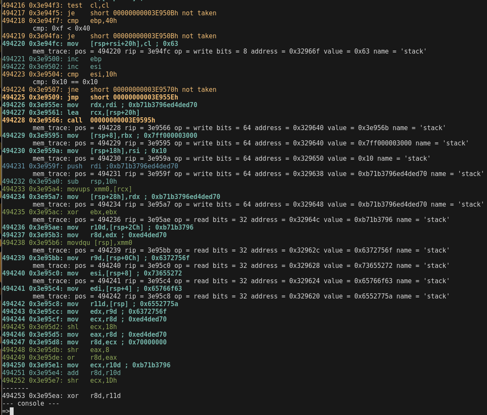
❯❯❯ cargo run --release -- -6 -f test/sc32win_donut.bin -vv -m -i 'qword ptr [rsp + 0x8]'
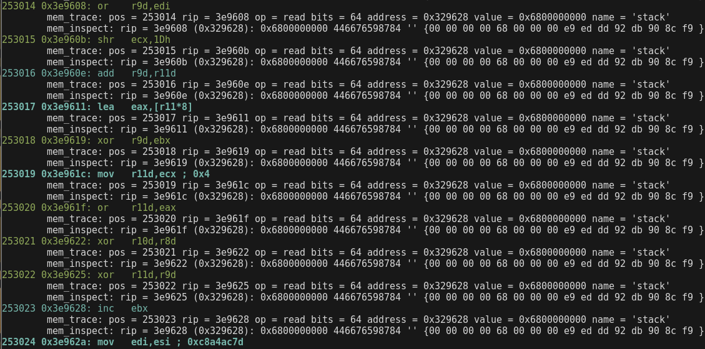
Trace String
having the address of the string to trace, use -s <addr> to trace it
❯❯❯ cargo run --release -- -6 -f test/sc64lin_strgen.bin -vv -s 0x329ec8
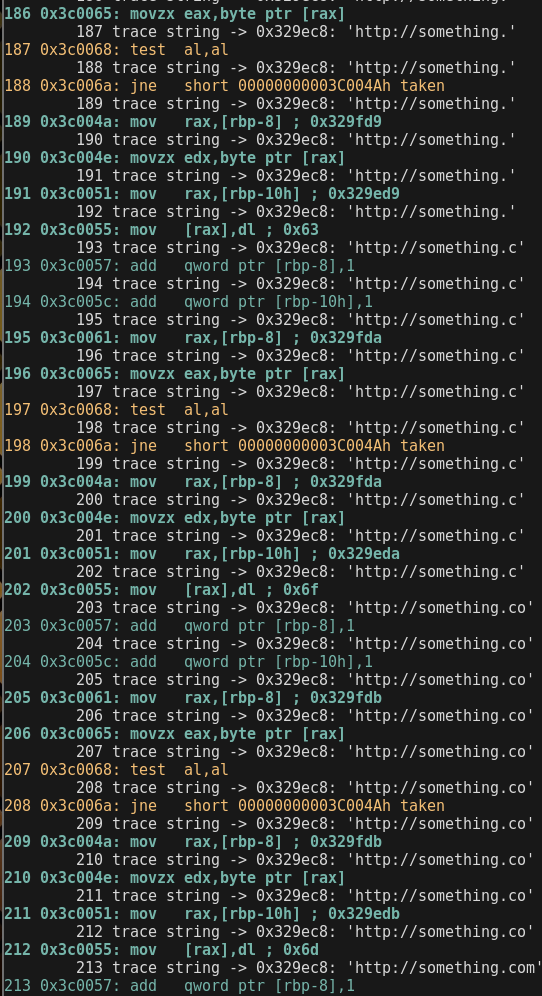
Doing full verbose of millions of instructions is slower than non verbose mode, so let's enable the verbose mode only when it's needed.
❯❯❯ cargo run --release -- -6 -f test/sc64lin_strgen.bin -s 0x329ec8 -V 191
Other option is using tracers with no verbose mode.
❯❯❯ cargo run --release -- -6 -f test/sc64lin_strgen.bin -s 0x329ec8
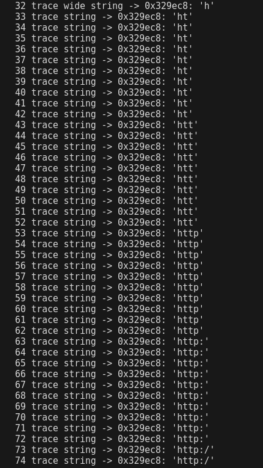
Trace Function Calls
Following the call paths can be useful when combining emulation with static analysis to see where we are coming from.
❯❯❯ cargo run --release -- -6 -f test/exe64win_enigma.bin --call
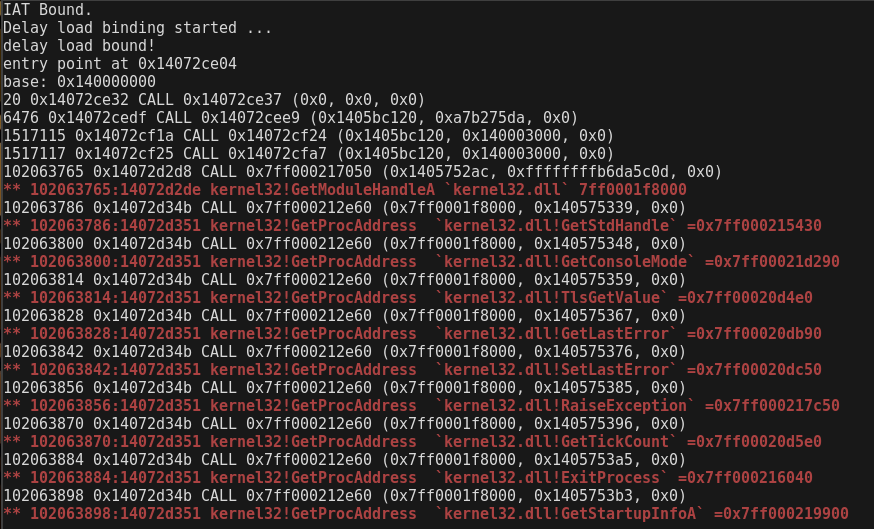
In this case, it is more convinient not to use verbose mode.
Interactive Console
With the option -c <num> mwemu stops the emulation when will reached that num of emulated instructions, then spawn a console.
For instance, we don't want to emulate 102063765 instructions in verbose mode, It's faster not using verbose mode. The -c option will enable verbose mode and tracers 100 instructions before reaching that number, so when console is spawned we have some previous context.
❯❯❯ cargo run --release -- -6 -f test/exe64win_enigma.bin -c 102063765
dll_path: maps/maps64//ntdll.dll dll: ntdll.dll
PE64 header detected.
loading memory maps
dll_path: maps/maps64//kernel32.dll dll: kernel32.dll
dll_path: maps/maps64//kernelbase.dll dll: kernelbase.dll
dll_path: maps/maps64//iphlpapi.dll dll: iphlpapi.dll
dll_path: maps/maps64//ws2_32.dll dll: ws2_32.dll
dll_path: maps/maps64//advapi32.dll dll: advapi32.dll
dll_path: maps/maps64//comctl32.dll dll: comctl32.dll
dll_path: maps/maps64//winhttp.dll dll: winhttp.dll
dll_path: maps/maps64//wininet.dll dll: wininet.dll
dll_path: maps/maps64//dnsapi.dll dll: dnsapi.dll
dll_path: maps/maps64//shell32.dll dll: shell32.dll
dll_path: maps/maps64//shlwapi.dll dll: shlwapi.dll
dll_path: maps/maps64//kernel32.dll dll: kernel32.dll
dll_path: maps/maps64//user32.dll dll: user32.dll
dll_path: maps/maps64//advapi32.dll dll: advapi32.dll
dll_path: maps/maps64//oleaut32.dll dll: oleaut32.dll
dll_path: maps/maps64//gdi32.dll dll: gdi32.dll
dll_path: maps/maps64//shell32.dll dll: shell32.dll
dll_path: maps/maps64//version.dll dll: version.dll
dll_path: maps/maps64//ole32.dll dll: ole32.dll
IAT Bound.
Delay load binding started ...
delay load bound!
entry point at 0x14072ce04
base: 0x140000000
102063740 0x14072d2ac: jne 000000014072D2A4h taken
102063741 0x14072d2a4: xor [rax],dl
mem_trace: pos = 102063741 rip = 14072d2a4 op = read bits = 8 address = 0x14072d4cb value = 0x59 name = 'exe64win_enigma593000'
mem_trace: pos = 102063741 rip = 14072d2a4 op = write bits = 8 address = 0x14072d4cb value = 0x54 name = 'exe64win_enigma593000'
102063742 0x14072d2a6: inc rax
102063743 0x14072d2a9: dec rcx
102063744 0x14072d2ac: jne 000000014072D2A4h taken
102063745 0x14072d2a4: xor [rax],dl
mem_trace: pos = 102063745 rip = 14072d2a4 op = read bits = 8 address = 0x14072d4cc value = 0x44 name = 'exe64win_enigma593000'
mem_trace: pos = 102063745 rip = 14072d2a4 op = write bits = 8 address = 0x14072d4cc value = 0x49 name = 'exe64win_enigma593000'
102063746 0x14072d2a6: inc rax
102063747 0x14072d2a9: dec rcx
102063748 0x14072d2ac: jne 000000014072D2A4h taken
102063749 0x14072d2a4: xor [rax],dl
mem_trace: pos = 102063749 rip = 14072d2a4 op = read bits = 8 address = 0x14072d4cd value = 0x42 name = 'exe64win_enigma593000'
mem_trace: pos = 102063749 rip = 14072d2a4 op = write bits = 8 address = 0x14072d4cd value = 0x4f name = 'exe64win_enigma593000'
102063750 0x14072d2a6: inc rax
102063751 0x14072d2a9: dec rcx
102063752 0x14072d2ac: jne 000000014072D2A4h taken
102063753 0x14072d2a4: xor [rax],dl
mem_trace: pos = 102063753 rip = 14072d2a4 op = read bits = 8 address = 0x14072d4ce value = 0x43 name = 'exe64win_enigma593000'
mem_trace: pos = 102063753 rip = 14072d2a4 op = write bits = 8 address = 0x14072d4ce value = 0x4e name = 'exe64win_enigma593000'
102063754 0x14072d2a6: inc rax
102063755 0x14072d2a9: dec rcx
102063756 0x14072d2ac: jne 000000014072D2A4h not taken
102063757 0x14072d2b2: jmp 000000014072D2BBh
mem_trace: pos = 102063758 rip = 14072d2bb op = read bits = 32 address = 0x14000303c value = 0x80 name = 'exe64win_enigma3000'
102063758 0x14072d2bb: mov edi,[rsi+3Ch] ; 0x80
mem_trace: pos = 102063759 rip = 14072d2be op = read bits = 32 address = 0x140003110 value = 0x571000 name = 'exe64win_enigma3000'
102063759 0x14072d2be: mov edi,[rdi+rsi+90h] ; 0x571000
102063760 0x14072d2c5: add rdi,rsi
102063761 0x14072d2c8: cmp dword ptr [rdi+0Ch],0
mem_trace: pos = 102063761 rip = 14072d2c8 op = read bits = 32 address = 0x14057400c value = 0x5722ac name = 'exe64win_enigma3000'
cmp: 0x5722ac > 0x0
102063762 0x14072d2cc: je 000000014072D370h not taken
mem_trace: pos = 102063763 rip = 14072d2d2 op = read bits = 32 address = 0x14057400c value = 0x5722ac name = 'exe64win_enigma3000'
102063763 0x14072d2d2: mov ecx,[rdi+0Ch] ; 0x5722ac
102063764 0x14072d2d5: add rcx,rsi
-------
102063765 0x14072d2d8: call qword ptr [rbp+5960B4h]
--- console ---
=>
Help Command
press h to see the available commands:
=>h
--- help ---
q ...................... quit
cls .................... clear screen
h ...................... help
s ...................... stack
v ...................... vars
sv ..................... set verbose level 0, 1 or 2
r ...................... register show all
r reg .................. show reg
rc ..................... register change
f ...................... show all flags
fc ..................... clear all flags
fz ..................... toggle flag zero
fs ..................... toggle flag sign
c ...................... continue
b ...................... breakpoint list
ba ..................... breakpoint on address
bi ..................... breakpoint on instruction number
bmr .................... breakpoint on read memory
bmw .................... breakpoint on write memory
bmx .................... breakpoint on execute memory
bcmp ................... break on next cmp or test
bc ..................... clear breakpoint
n ...................... next instruction
eip .................... change eip
rip .................... change rip
push ................... push dword to the stack
pop .................... pop dword from stack
fpu .................... fpu view
md5 .................... check the md5 of a memory map
seh .................... view SEH
veh .................... view vectored execption pointer
m ...................... memory maps
ms ..................... memory filtered by keyword string
ma ..................... memory allocs
mc ..................... memory create map
mn ..................... memory name of an address
ml ..................... memory load file content to map
mr ..................... memory read, speficy ie: dword ptr [esi]
mw ..................... memory write, speficy ie: dword ptr [esi] and then: 1af
mwb .................... memory write bytes, input spaced bytes
md ..................... memory dump
mrd .................... memory read dwords
mrq .................... memory read qwords
mds .................... memory dump string
mdw .................... memory dump wide string
mdd .................... memory dump to disk
mdda ................... memory dump all allocations to disk
mt ..................... memory test
r2 [addr] .............. spawn radare2 console if it's isntalled
ss ..................... search string
sb ..................... search bytes
sba .................... search bytes in all the maps
ssa .................... search string in all the maps
ll ..................... linked list walk
d ...................... dissasemble
dt ..................... dump structure
pos .................... print current position
enter .................. step into
tr ..................... trace reg
trc .................... trace regs clear
ldr .................... show ldr linked list
iat .................... find api name in all iat's
iatx ................... addr to api name
iatd ................... dump the iat of specific module
dump ................... dump current state to disk
---
=>
Register Commands
Use r for viewing all the registers, or r [reg] to see specific register.
=>r rsp
rsp: 0x329f40
=>r
rax: 0x0 0
rbx: 0x0 0
rcx: 0x0 0
rdx: 0x2f 47
rsi: 0x0 0
rdi: 0x0 0
rsp: 0x329f40
rbp: 0x329ff8
rip: 0x3c006e
r8 : 0x0 0
r9 : 0x0 0
r10: 0x0 0
r11: 0x0 0
r12: 0x0 0
r13: 0x0 0
r14: 0x0 0
r15: 0x0 0
=>rc rax
command not found, type h
=>rc
register name=>rax
value=>0x1337
=>r rax
rax: 0x1337 4919
=>
you can use 64bits and 32bits registers only, 16/8bits is not allowed for now ("r ax" or "r al")
Maps Command
press m to list all the memory maps and addresses.
=>m
--- maps ---
oleaut32.data 0x7ff001dc7000 - 0x7ff001dca000 (12288)
ldr 0x7ff000000000 - 0x7ff0000000b4 (180)
ntdll.pe 0x7ff000003000 - 0x7ff000004000 (4096)
kernelbase.text 0x7ff0002b6000 - 0x7ff0003c8000 (1122304)
ws2_32.didat 0x7ff00060f000 - 0x7ff000610000 (4096)
advapi32.pe 0x7ff000623000 - 0x7ff000624000 (4096)
winhttp.text 0x7ff000960000 - 0x7ff000a0f000 (716800)
iphlpapi.text 0x7ff00057f000 - 0x7ff0005a8000 (167936)
version.rsrc 0x7ff001e0c000 - 0x7ff001e0d000 (4096)
dnsapi.rdata 0x7ff000d6d000 - 0x7ff000d8f000 (139264)
kernelbase.rsrc 0x7ff000555000 - 0x7ff000556000 (4096)
comctl32.dll.ldr 0x7fe00000a000 - 0x7fe00000a940 (2368)
shell32.rsrc 0x7ff0012d8000 - 0x7ff001b1d000 (8671232)
advapi32.reloc 0x7ff0006cb000 - 0x7ff0006cd000 (8192)
advapi32.rdata 0x7ff00068a000 - 0x7ff0006bf000 (217088)
wininet.rsrc 0x7ff000cbe000 - 0x7ff000cd7000 (102400)
wininet.didat 0x7ff000cbd000 - 0x7ff000cbe000 (4096)
dnsapi.didat 0x7ff000d99000 - 0x7ff000d9a000 (4096)
ole32.pdata 0x7ff001f38000 - 0x7ff001f47000 (61440)
exe64win_enigma3000 0x140003000 - 0x140593000 (5832704)
user32.rsrc 0x7ff001c30000 - 0x7ff001d12000 (925696)
comctl32.pdata 0x7ff0008f9000 - 0x7ff00090f000 (90112)
oleaut32.text 0x7ff001d14000 - 0x7ff001da1000 (577536)
kernelbase.data 0x7ff000540000 - 0x7ff000545000 (20480)
winhttp.pdata 0x7ff000a3c000 - 0x7ff000a46000 (40960)
ws2_32.rdata 0x7ff0005fd000 - 0x7ff00060a000 (53248)
...
We can see map name, start address, end address and size in bytes.
Other memory related commands:
m ...................... memory maps
ms ..................... memory filtered by keyword string
ma ..................... memory allocs
mc ..................... memory create map
mn ..................... memory name of an address
ml ..................... memory load file content to map
mr ..................... memory read, speficy ie: dword ptr [esi]
mw ..................... memory write, speficy ie: dword ptr [esi] and then: 1af
mwb .................... memory write bytes, input spaced bytes
md ..................... memory dump
mrd .................... memory read dwords
mrq .................... memory read qwords
mds .................... memory dump string
mdw .................... memory dump wide string
mdd .................... memory dump to disk
mdda ................... memory dump all allocations to disk
mt ..................... memory test
Get Map details from Address
if the code is using an address and you want more details, use command mn.
=>mn
address=>0x140000008
map: exe64win_enigma.pe 0x140000000-0x140001000 (4096)
=>
Note that mwemu commands dont accept parameters direcly, first type the command + enter then the parameter will prompted.
except for the r2 command that needs an address to spawn radare2, ie: r2 0x140000008
Search Commands
There are four commands to search.
use command ss for search a string in a specific map.
use command sb for search a sequence of spaced bytes in a specific map.
use command ssa for search a string in all the maps.
use command sba for search a sequence of spaced bytes in all the maps.
=>ssa (search string in all the maps)
string=>http://something.com/
found at 0x329ec8 'http://something.com/'
found at 0x329fc8 'http://something.com/'
map not found
=>mds (display string on an address)
address=>0x329ec8
0x329ec8: 'http://something.com/'
=>mds
address=>0x329fc8
0x329fc8: 'http://something.com/'
=>
=>mn (which map is that address?)
address=>0x329ec8
map: stack 0x22a000-0x32c000 (1056768)
=>mn
address=>0x329fc8
map: stack 0x22a000-0x32c000 (1056768)
=>
=>ss (search string on specific address)
map name=>stack
string=>http://something.com/
found 0x329ec8 'http://something.com/'
found 0x329fc8 'http://something.com/'
=>sb (search spaced bytes on specific address, ie searching hexlified "http://")
map name=>stack
spaced bytes=>68 74 74 70 3a 2f 2f
found at 0x329ec8
found at 0x329fc8
=>
Breakpoint Commands
There are four types of breakpoints, but only one breakpoint can be set for each type at once.
break on address, the next time this address is reached the emulation will stop there.
break on instruction, when the emulator reach that number of instructions emulated in total, will stop there.
break on memory read, next time this address is readed by any assembly instruction (not api or syscall) the emulator will break there.
break on memory write, next write to this address (doesn't matter if is a 1-byte write or any amount) will stop the emulation.
break on next cmp or test instruction, this will stop the emulator on next cmp or test instruction.
Use command "b" to see the state of the 4 types of breakpoints.There are four commands to search.
=>b
break on address: []
break on instruction: []
break on memory read: []
break on memory write: []
Use these commands to set the breakpoints:
b ...................... breakpoint list
ba ..................... breakpoint on address
bi ..................... breakpoint on instruction number
bmr .................... breakpoint on read memory
bmw .................... breakpoint on write memory
bmx .................... breakpoint on execute memory
bcmp ................... break on next cmp or test instruction
bc ..................... clear breakpoint
Some examples:
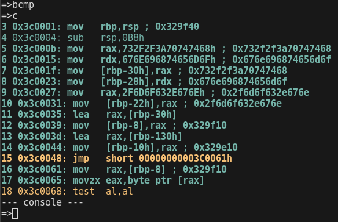
--- console ---
=>bi
instruction number=>100
=>c
18 0x3c006a: jne short 00000000003C004Ah taken
19 0x3c004a: mov rax,[rbp-8] ; 0x329f10
20 0x3c004e: movzx edx,byte ptr [rax]
21 0x3c0051: mov rax,[rbp-10h] ; 0x329e10
22 0x3c0055: mov [rax],dl ; 0x68
23 0x3c0057: add qword ptr [rbp-8],1
24 0x3c005c: add qword ptr [rbp-10h],1
25 0x3c0061: mov rax,[rbp-8] ; 0x329f11
...
96 0x3c0065: movzx eax,byte ptr [rax]
97 0x3c0068: test al,al
98 0x3c006a: jne short 00000000003C004Ah taken
99 0x3c004a: mov rax,[rbp-8] ; 0x329f18
-------
100 0x3c004e: movzx edx,byte ptr [rax] (this instruction is the next to be emulated, it was not emulated yet)
--- console ---
=>
Change Verbosity
If you type the "sv" command, mwemu will ask you for the new verbosity level number, these are the possible verbose levels:
0: It's like not using any -v for minimum verbosity, only WinAPI calls and syscalls will be printed.
1: It's like using -v for viewing also some messages like, polymorfic code detected etc.
2: It's like using -vv for viewing also the assembly code, mwemu will print every assembly instruction, this makes slower the emulation.2: Use -vv for viewing also the assembly code, mwemu will print every assembly instruction, this makes slower the emulation.
3: It's like using -vvv for also viewing every "rep" interaction, in instruction with rep prefix like "rep movzx" will print one line for every step of the rep loop.
For instance, we want to emulate quiclky the first 200 insturctions, and then enable the verbosity, this could be dont with -V, but let's do it from the console with "sv" command:
~/s/mwemu ❯❯❯ cargo run --release -- -6 -f test/sc64win_strgen.bin -c 200
...
200 0x3c004e: movzx edx,byte ptr [rax] (instruction 200 is not emulated yet, it's the next instruction to be emulated)
--- console ---
=>sv
verbose level=>3
=> [enter for emulating instruction 200]
=> c (continue emulating now with maximum verbosity)
...
View LDR
The LDR is a triple circular liked list that cointains all the linked modules (not only DLL, also EXE)
MWEMU provides several commands to view and query the LDR.
"ldr" command is the way of viewing the LDR contents.
"iat" comamnd allows to find an specified api name in all the IAT's of every linked module.
"iatx" If we have an address and we want to know which API name is, this command does the address to name query.
"iatd" command dump the full IAT of a specified module.
--- console ---
=>ldr
0x7fe000000000 loader.exe flink:7fe000004000 blink:7fe00000f000 base:7ff001b7e000 pe_hdr:f8 5045
0x7fe000004000 ntdll.dll flink:7fe000005000 blink:7fe000000000 base:7ff000003000 pe_hdr:e8 5045
0x7fe000005000 kernel32.dll flink:7fe000006000 blink:7fe000004000 base:7ff0001f8000 pe_hdr:f0 5045
0x7fe000006000 kernelbase.dll flink:7fe000007000 blink:7fe000005000 base:7ff0002b5000 pe_hdr:f0 5045
0x7fe000007000 iphlpapi.dll flink:7fe000008000 blink:7fe000006000 base:7ff00057e000 pe_hdr:f8 5045
0x7fe000008000 ws2_32.dll flink:7fe000009000 blink:7fe000007000 base:7ff0005b8000 pe_hdr:f0 5045
0x7fe000009000 advapi32.dll flink:7fe00000a000 blink:7fe000008000 base:7ff000623000 pe_hdr:100 5045
0x7fe00000a000 comctl32.dll flink:7fe00000b000 blink:7fe000009000 base:7ff0006cd000 pe_hdr:f0 5045
0x7fe00000b000 winhttp.dll flink:7fe00000c000 blink:7fe00000a000 base:7ff00095f000 pe_hdr:f8 5045
0x7fe00000c000 wininet.dll flink:7fe00000d000 blink:7fe00000b000 base:7ff000a4f000 pe_hdr:f0 5045
0x7fe00000d000 dnsapi.dll flink:7fe00000e000 blink:7fe00000c000 base:7ff000cd9000 pe_hdr:f8 5045
0x7fe00000e000 shell32.dll flink:7fe00000f000 blink:7fe00000d000 base:7ff000da4000 pe_hdr:f0 5045
0x7fe00000f000 shlwapi.dll flink:7fe000000000 blink:7fe00000e000 base:7ff001b2c000 pe_hdr:f0 5045
View Structures
The windows debugger windbg has a unique feature that is dt command to see information about structures, is quite useful and uniq.
MWEMU implements a similar dt command but for specific structures, that could be useful in some situations.
Let's use dt to inspect PEB structure.
=>dt
structure=>peb
address=>0x7ffdf000
PEB {
reserved1: [
0x0,
0x0,
],
being_debugged: 0x0,
reserved2: 0x0,
reserved3: [
0xffffffff,
0x400000,
],
ldr: 0x77647880,
process_parameters: 0x2c1118,
reserved4: [
0x0,
0x2c0000,
0x77647380,
],
alt_thunk_list_ptr: 0x0,
reserved5: 0x0,
reserved6: 0x6,
reserved7: 0x773cd568,
reserved8: 0x0,
alt_thunk_list_ptr_32: 0x0,
reserved9: [
0x0,
...
Let's use dt to inspect PEB_LDR_DATA structure.
=>dt
structure=>PEB_LDR_DATA
address=>0x77647880
PebLdrData {
length: 0x30,
initializated: 0x1,
sshandle: 0x0,
in_load_order_module_list: ListEntry {
flink: 0x2c18b8,
blink: 0x2cff48,
},
in_memory_order_module_list: ListEntry {
flink: 0x2c18c0,
blink: 0x2cff50,
},
in_initialization_order_module_list: ListEntry {
flink: 0x2c1958,
blink: 0x2d00d0,
},
entry_in_progress: ListEntry {
flink: 0x0,
blink: 0x0,
},
}
=>
Let's use dt to inspect LDR_DATA_TABLE_ENTRY structure, that represents one LDR entry in the linked list of a specific linked module.
=>dt
structure=>LDR_DATA_TABLE_ENTRY
address=>0x2c18c0
LdrDataTableEntry {
reserved1: [
0x2c1950,
0x77647894,
],
in_memory_order_module_links: ListEntry {
flink: 0x0,
blink: 0x0,
},
reserved2: [
0x0,
0x400000,
],
dll_base: 0x4014e0,
entry_point: 0x1d000,
reserved3: 0x40003e,
full_dll_name: 0x2c1716,
reserved4: [
0x0,
0x0,
0x0,
0x0,
0x0,
0x0,
0x0,
0x0,
],
reserved5: [
0x17440012,
0x4000002c,
0xffff0000,
],
checksum: 0x1d6cffff,
reserved6: 0xa640002c,
time_date_stamp: 0xcdf27764,
}
=>
Example: a malware is hiding something in an exception.
3307726 0x4f9673: push ebp
3307727 0x4f9674: push edx
3307728 0x4f9675: push eax
3307729 0x4f9676: push ecx
3307730 0x4f9677: push ecx
3307731 0x4f9678: push 4F96F4h
3307732 0x4f967d: push dword ptr fs:[0]
Reading SEH 0x0
-------
3307733 0x4f9684: mov eax,[51068Ch]
--- console ---
=>
Let's inspect exception structures:
--- console ---
=>r esp
esp: 0x22de98
=>dt
structure=>cppeh_record
address=>0x22de98
CppEhRecord {
old_esp: 0x0,
exc_ptr: 0x4f96f4,
next: 0xfffffffe,
exception_handler: 0xfffffffe,
scope_table: PScopeTableEntry {
enclosing_level: 0x278,
filter_func: 0x51068c,
handler_func: 0x288,
},
try_level: 0x288,
}
=>
And here we have the error routine 0x4f96f4 and the filter 0x51068c.
View Data
There are multiple commands to view data, but currently I'm using the "r2 addr" command which is better bot for code and data. Note that r2 command executes the radare2 and transfer the memory map of the selected address, and sync radare2 with mwemu, but this command needs to have installed radare2 in the path, for instance from the git. More details on radare2 chapter. It worth to install radare2.
Commands for displaying information:
mr ..................... memory read, speficy ie: dword ptr [esi]
mw ..................... memory write, speficy ie: dword ptr [esi] and then: 1af
mwb .................... memory write bytes, input spaced bytes
md ..................... memory dump
mrd .................... memory read dwords
mrq .................... memory read qwords
mds .................... memory dump string
mdw .................... memory dump wide string
mdd .................... memory dump to disk
mdda ................... memory dump all allocations to disk
mt ..................... memory test
Example with md command:
--- console ---
=>md
address=>0x329ec8
0x329ec8: 68 74 74 70 3a 2f 2f 73 6f 6d 65 74 68 69 6e 67 http://something
0x329ed8: 2e 63 6f 6d 2f 00 00 00 00 00 00 00 00 00 00 00 .com/...........
0x329ee8: 00 00 00 00 00 00 00 00 00 00 00 00 00 00 00 00 ................
0x329ef8: 00 00 00 00 00 00 00 00 00 00 00 00 00 00 00 00 ................
0x329f08: 00 00 00 00 00 00 00 00 00 00 00 00 00 00 00 00 ................
0x329f18: 00 00 00 00 00 00 00 00 00 00 00 00 00 00 00 00 ................
0x329f28: 00 00 00 00 00 00 00 00 00 00 00 00 00 00 00 00 ................
0x329f38: 00 00 00 00 00 00 00 00 00 00 00 00 00 00 00 00 ................
=>
Radare2 Command
This command gives a lot of power to MWEMU because we can use radare2 from inside of a MWEMU emualtion moment.
Note that this executes another program (also free software) named radare2 that has to be installed and accesible from the path.
The instalation is simple I will explan it later.
Spawning radare over a data address:
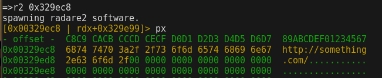
Using q to return form r2 prompt to mwemu prompt and spawn radare again with a code address:
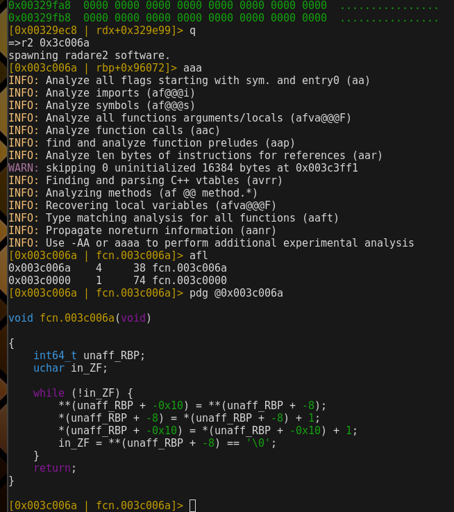
Radare are recognizing functions and decompiling them with the multiple decompilers, even we can use decai for AI based decompiled in python etc.
More info specific of radare commands check the r2book: https://book.rada.re/
Regarding the radare2 installation:
❯❯❯ git clone https://github.com/radareorg/radare2.git
❯❯❯ cd radare2
❯❯❯ sys/install.sh
The install.sh script does all the installation, It will prompt sudo to copy binaries to folders that are on the path.
If radare2 is in the path, It would be possible to trigger it from mwemu r2 command.
MWEMU from python scripts
This is probably the most practical use-case of MWEMU, using the pymwemu python module.
pymwemu Instalation
They easiest way to install this is using pip, the package is published at pypi https://pypi.org/project/pymwemu/
For using latest version use git, but it's more tricky to install, because you need rust, cargo and maturin.
It's precompiled for linux 64bits, so in linux in theory you don't need to install rust first.
In linux you just do:
❯❯❯ pip3 install pymwemu --break-system-packages
In mac, windows or if the pip requires it, install first rust.
Install rust from rustup, make sure cargo is on the path, and do pip or pip3:
❯❯❯ pip install --upgrade pip
❯❯❯ pip3 install --upgrade pip
❯❯❯ curl --proto '=https' --tlsv1.2 -sSf https://sh.rustup.rs | sh
❯❯❯ pip install pymwemu
❯❯❯ pip3 install pymwemu
In mac, if there is a problem with !tapi-tbd the solution is:
❯❯❯ sudo xcode-select --switch /Library/Developer/CommandLineTools
To verify the installation we can import the module in python console.
❯❯❯ python3
Python 3.13.5 (main, Jun 25 2025, 18:55:22) [GCC 14.2.0] on linux
Type "help", "copyright", "credits" or "license" for more information.
>>> import pymwemu
Initialized logging
>>>
Instantiate and Configure the Emulator
First of all, import the module and init the 32bits or the 64bits engine.
Then there are some initial configurations you can do detailed later.
>>> import pymwemu
Initialized logging
>>> emu = pymwemu.init32() # or emu = pymwemu.init64()
>>> # then there are some initial configurations, for instance:
>>> emu.set_verbose(3) # to show all the assembly, normally this is not needed. By default is 0 verbose.
>>> emu.enable_console() # by default is disabled.
>>> emu.spawn_console_at_pos(6) # useful for debugging the script.
loading memory maps
>>>
>>>
All the configurations possible:
emu.load_maps(folder:str)set the maps32 or maps64 folder with all the libs.emu.load_binary(filename:str)load the sample to be emulated:.emu.load_code_bytes(opcodes:bytes)if you have the bytes already on python bytes() / bytearray()emu.load_map(name:str, filename:str, base_addr:int)use this if you need to add extra modules
Loading Maps
In most of cases you will need to load all the Windows OS simulation part, to have all the PEB+TEB+LDR linkedlist and WinAPI infra.
For doing this you can use emu.load_maps(folder:str)
If you are going to emulate pure assembly, with no api calls, and no access to windows structures, you don't need to load the maps.
So does if you are emulating linux elf64 or shellcodes (remember, elf64 is not well suported for now)
Example:
>>> emu.load_maps('/home/sha0/src/mwemu/maps/maps64/')
loading memory maps
dll_path: /home/sha0/src/mwemu/maps/maps64//ntdll.dll dll: ntdll.dll
dll_path: /home/sha0/src/mwemu/maps/maps64//kernel32.dll dll: kernel32.dll
dll_path: /home/sha0/src/mwemu/maps/maps64//kernelbase.dll dll: kernelbase.dll
dll_path: /home/sha0/src/mwemu/maps/maps64//iphlpapi.dll dll: iphlpapi.dll
dll_path: /home/sha0/src/mwemu/maps/maps64//ws2_32.dll dll: ws2_32.dll
dll_path: /home/sha0/src/mwemu/maps/maps64//advapi32.dll dll: advapi32.dll
dll_path: /home/sha0/src/mwemu/maps/maps64//comctl32.dll dll: comctl32.dll
dll_path: /home/sha0/src/mwemu/maps/maps64//winhttp.dll dll: winhttp.dll
dll_path: /home/sha0/src/mwemu/maps/maps64//wininet.dll dll: wininet.dll
dll_path: /home/sha0/src/mwemu/maps/maps64//dnsapi.dll dll: dnsapi.dll
dll_path: /home/sha0/src/mwemu/maps/maps64//shell32.dll dll: shell32.dll
dll_path: /home/sha0/src/mwemu/maps/maps64//shlwapi.dll dll: shlwapi.dll
>>>
Note that this need to have the maps, so git clone the repo:
git clone https://github.com/sha0coder/mwemu.git
loading ELF, PE, or shellcodes
emu.load_binary(filename:str)load the sample to be emulated:.emu.load_code_bytes(opcodes:bytes)if you have the bytes already on python bytes() / bytearray()
Example:
>>> emu.load_binary('shellcodes32/shikata.bin')
>>>
Creating Buffers
You can load sections from disk to the emulator's virtual memory, and also can allocate buffers.
emu.alloc(name:str, size:int) -> intallocate an space.emu.alloc_at(name:str, addr:int, size: int)this allows you to reserve a buffer in a specific position.emu.load_map(name:str, filename:str, base_addr:int)you can load extra sections from disk to specific addresses.
Example:
>>> addr = emu.alloc("mybuffer", 1024)
>>>
MWEMU for Rust apps
All is implemented in libmwemu, mwemu is just a flags parser that uses libmwemu, same with pyhon bindings on pymwemu, so having said that, from rust you can use all the power of MWEMU, and most of the objects are public so you have a good control of the emulator.